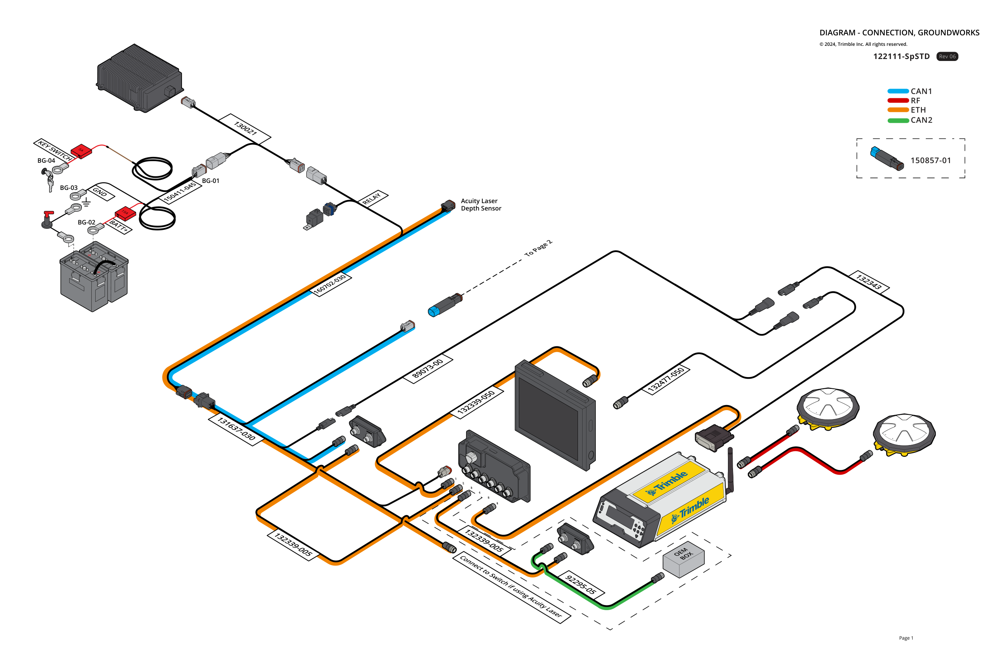
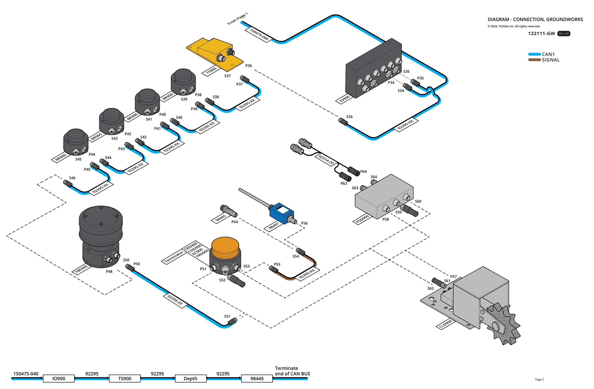
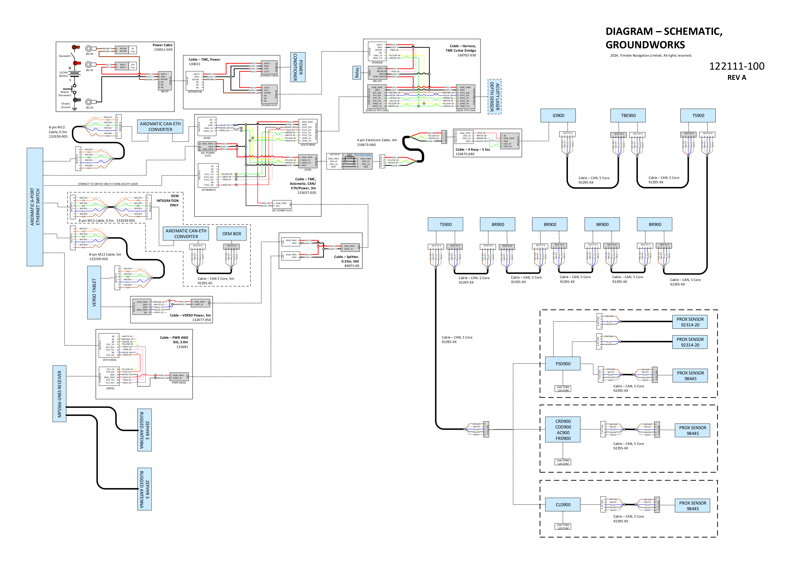

Trimble Groundworks wiring documents for field reference. Open the PDF in your browser — stored in this app for offline use.
-
PDF
Connection diagram

Page 1 — system overview

Page 2 — CAN harness detail · tap any preview to open full PDF
-
PDF
Wiring schematic

Schematic preview — tap to open full PDF